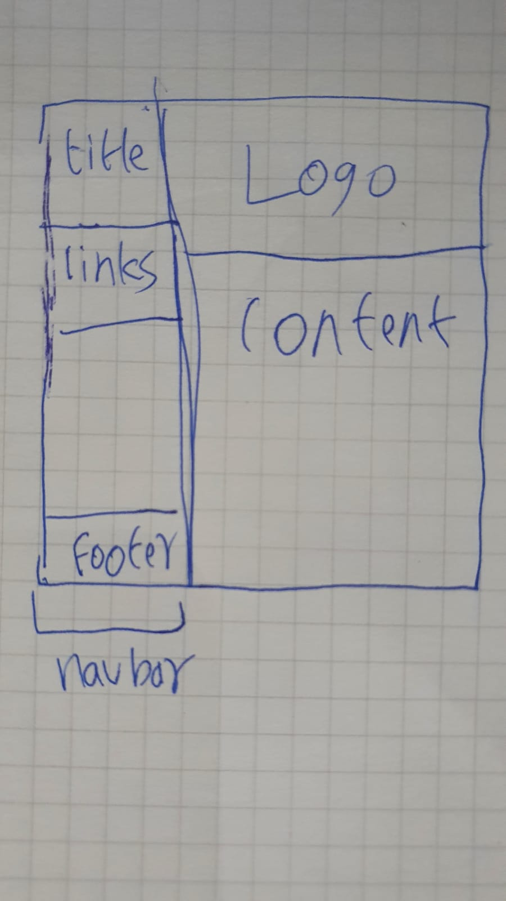

Sketch:
Sketch:
 The main colors were a mix of black, grey and white.
The main theme was nav bar on the left vertically, logo on top and the content in between. The footer was included into the nav bar as well. The content sections always had white background on the grey body for contrast
Style Sheets:
Each page also had it's own css file for it's unique content
CSS3 Features: